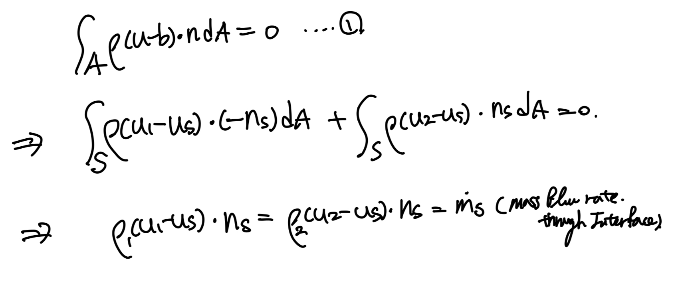
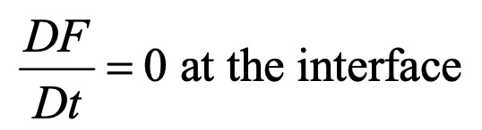
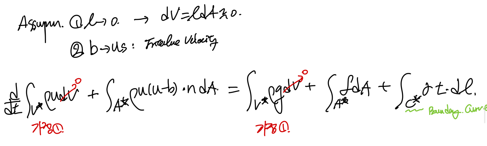
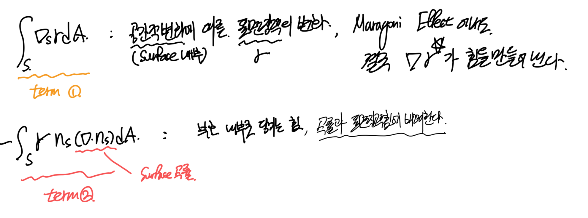
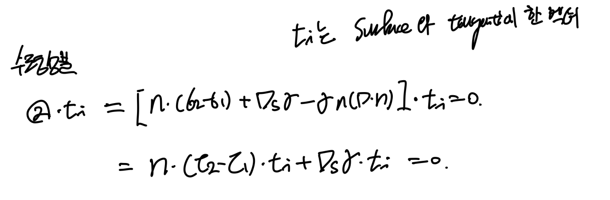
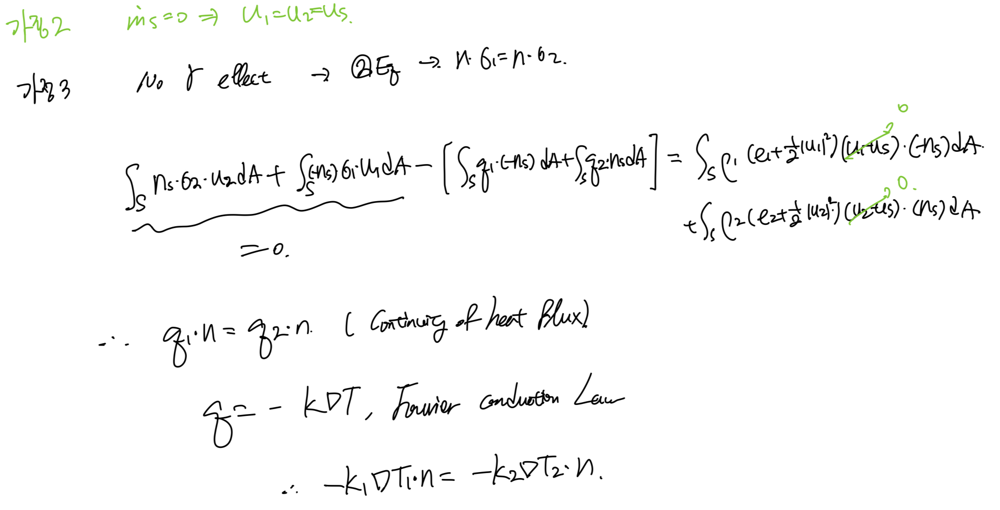
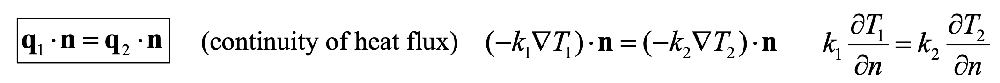

<!DOCTYPE html>
<html lang="ko" data-theme="light">
<head>
  <meta charset="utf-8">
  <meta name="viewport" content="width=device-width, initial-scale=1">
  <title>Ch2 Conservation Laws_ part4 Boundary Condition | Sehyeog Kim</title>
  <link rel="stylesheet" href="../../../../assets/css/style.css">
  <script>!function(){var t=localStorage.getItem("theme")||"light";document.documentElement.setAttribute("data-theme",t)}();</script>
</head>
<body>
  <button class="theme-toggle" aria-label="Toggle theme"><svg class="icon-sun" viewBox="0 0 24 24" fill="none" stroke="currentColor" stroke-width="2" stroke-linecap="round" stroke-linejoin="round"><circle cx="12" cy="12" r="5"/><line x1="12" y1="1" x2="12" y2="3"/><line x1="12" y1="21" x2="12" y2="23"/><line x1="4.22" y1="4.22" x2="5.64" y2="5.64"/><line x1="18.36" y1="18.36" x2="19.78" y2="19.78"/><line x1="1" y1="12" x2="3" y2="12"/><line x1="21" y1="12" x2="23" y2="12"/><line x1="4.22" y1="19.78" x2="5.64" y2="18.36"/><line x1="18.36" y1="5.64" x2="19.78" y2="4.22"/></svg><svg class="icon-moon" viewBox="0 0 24 24" fill="none" stroke="currentColor" stroke-width="2" stroke-linecap="round" stroke-linejoin="round"><path d="M21 12.79A9 9 0 1 1 11.21 3 7 7 0 0 0 21 12.79z"/></svg></button>

  <header class="mobile-header">
    <span class="site-title">Sehyeog Kim</span>
    <button class="menu-toggle" aria-label="Menu">&#9776;</button>
  </header>
  <div class="sidebar-overlay"></div>

  <div class="site-wrapper">
    <aside class="sidebar">
      <div class="sidebar-bg">
        
      </div>
      <div class="sidebar-profile">
        
        <h1 class="profile-name">Sehyeog Kim</h1>
        <p class="profile-bio">AI &amp; Computational Engineering<br>Personal Blog</p>
        <div class="profile-links">
          <a href="https://github.com/Sehyeogkim" target="_blank" rel="noopener">
            <svg viewBox="0 0 16 16" width="15" height="15" fill="currentColor"><path d="M8 0C3.58 0 0 3.58 0 8c0 3.54 2.29 6.53 5.47 7.59.4.07.55-.17.55-.38 0-.19-.01-.82-.01-1.49-2.01.37-2.53-.49-2.69-.94-.09-.23-.48-.94-.82-1.13-.28-.15-.68-.52-.01-.53.63-.01 1.08.58 1.23.82.72 1.21 1.87.87 2.33.66.07-.52.28-.87.51-1.07-1.78-.2-3.64-.89-3.64-3.95 0-.87.31-1.59.82-2.15-.08-.2-.36-1.02.08-2.12 0 0 .67-.21 2.2.82.64-.18 1.32-.27 2-.27.68 0 1.36.09 2 .27 1.53-1.04 2.2-.82 2.2-.82.44 1.1.16 1.92.08 2.12.51.56.82 1.27.82 2.15 0 3.07-1.87 3.75-3.65 3.95.29.25.54.73.54 1.48 0 1.07-.01 1.93-.01 2.2 0 .21.15.46.55.38A8.013 8.013 0 0016 8c0-4.42-3.58-8-8-8z"/></svg> GitHub
          </a>
        </div>
      </div>
      <nav class="sidebar-nav">
        <a href="/" class="nav-item nav-home">Home</a>
        <span class="nav-group-label">AI</span>
        <a href="/blog/ai/agentic-ai-theory/" class="nav-item">Agentic_AI_Theory<span class="nav-post-count">8</span></a>
        <a href="/blog/ai/deep-learning/" class="nav-item">Deep-learning<span class="nav-post-count">14</span></a>
        <a href="/blog/ai/machine-learning/" class="nav-item">Machine_Learning<span class="nav-post-count">11</span></a>
        <a href="/blog/ai/sensitivity-analysis/" class="nav-item">Sensitivity_Analysis<span class="nav-post-count">3</span></a>
        <span class="nav-group-label">BioMechanics</span>
        <a href="/blog/biomechanics/blood-flow-and-metabolism/" class="nav-item">Blood-Flow-and-Metabolism<span class="nav-post-count">12</span></a>
        <a href="/blog/biomechanics/cardiovascular-diseases/" class="nav-item">CardioVascular_Diseases<span class="nav-post-count">8</span></a>
        <span class="nav-group-label">Mechanical_Engineering</span>
        <a href="/blog/mechanical-engineering/computational-linear-algebra/" class="nav-item">Computational-Linear-Algebra<span class="nav-post-count">15</span></a>
        <a href="/blog/mechanical-engineering/computational-fluid-dynamics/" class="nav-item">Computational_Fluid_Dynamics<span class="nav-post-count">14</span></a>
        <a href="/blog/mechanical-engineering/continuum-mechanics/" class="nav-item">Continuum-Mechanics<span class="nav-post-count">9</span></a>
        <a href="/blog/mechanical-engineering/engineering-mathematics/" class="nav-item">Engineering_Mathematics<span class="nav-post-count">14</span></a>
        <a href="/blog/mechanical-engineering/finite-element-method/" class="nav-item">Finite-Element-Method<span class="nav-post-count">1</span></a>
        <a href="/blog/mechanical-engineering/fluid-mechanics/" class="nav-item">Fluid_Mechanics<span class="nav-post-count">18</span></a>
        <a href="/blog/mechanical-engineering/gas-dynamics/" class="nav-item">Gas_Dynamics<span class="nav-post-count">24</span></a>
        <a href="/blog/mechanical-engineering/heat-transfer/" class="nav-item">Heat-transfer<span class="nav-post-count">8</span></a>
        <a href="/blog/mechanical-engineering/solid-mechanics/" class="nav-item">Solid_Mechanics<span class="nav-post-count">25</span></a>
        <a href="/blog/mechanical-engineering/thermodynamics/" class="nav-item">Thermodynamics<span class="nav-post-count">14</span></a>
        <a href="/blog/mechanical-engineering/viscous-flow/" class="nav-item active">Viscous_Flow<span class="nav-post-count">28</span></a>
      </nav>
    </aside>

    <main class="main-content">
      <div class="breadcrumb"><a href="/">Home</a><span class="sep">/</span><a href="/blog/mechanical-engineering/">Mechanical_Engineering</a><span class="sep">/</span><a href="/blog/mechanical-engineering/viscous-flow/">Viscous_Flow</a><span class="sep">/</span><span>Ch2 Conservation Laws_ part4 Boundary Condition</span></div>
<a href="/blog/mechanical-engineering/viscous-flow/" class="back-link">&larr; Back to Viscous_Flow</a>
<div class="page-header"><h1>Ch2 Conservation Laws_ part4 Boundary Condition</h1></div>
<div class="post-meta"><span class="meta-item"><span class="meta-label">Date:</span> 2024-10-02</span><span class="meta-item"><span class="meta-label">Category:</span> Viscous_Flow</span><span class="meta-item"><span class="meta-label">Source:</span> <a href="https://jeffdissel.tistory.com/m/109" target="_blank" rel="noopener">link</a></span></div>
<article class="post-content"><p>Ch2 Conservation Laws_ part4 Boundary Condition<br />
지금까지,<br />
Cartesian Tensor를 활용한<br />
Continuity Equation<br />
Momentum Equation<br />
Energy Equation<br />
을 살펴보았고,<br />
여기서, 우리는 어떠한 공학적 상황을<br />
위 3가지 식으로 해석할 것이고,<br />
그러기 위해서는 상황에 있는<br />
Boundary condition<br />
으로<br />
식을 설정해주어야 한다.<br />
지금부터,<br />
Boundary Condition(BC)<br />
를 어떻게 설정하는지 살펴보자.</p>
<hr />
<p>A. General Boundary Condition at the Interface.<br />
자 어떠한 물질 1,2 (고체든 액체든)<br />
이 이렇게 존재한다면<br />
반드시 만나는 면이 존재할 것이다.<br />
그 면을 Interface라고 부른다.<br />
먼저, conventional 한 interface를<br />
Control volume analysis로 분석해보자.<br />
<br />
Medium1, Medium2 사이의 아주 작은 Control volume on the interface.<br />
t',t'': Interface 해당 지점에서 수평방향의 방향벡터 2개<br />
ns: Interface해당지점에서 표면과 수직백터<br />
us: Velocity of the interface<br />
b: Velocity of control volume<br />
u1: Velocity of Medium1 on the Interface<br />
u2: Velocity of Medium2 on the interface<br />
dV = l * dA<br />
(dA: control volume의 밑면 미소면적)<br />
(l: interface thickness)<br />
이제, 설정한 C.V에 2가지 가정을 짚고 넘어가야 한다.<br />
1. 두께가 굉장히 얇은 interface,<br />
2. 굉장히, 얇기때문에<br />
C.V input surface velocity(b1)<br />
= C.V output surface velocity(b2)<br />
= Interface Velocity (us)<br />
<br />
이제,<br />
바로 우리가 아는 Reynolds Transport Theorem(RTT) 적용해보자.<br />
여기서 핵심 적인 것은, 움직이고 있는 Control volume이라는 것이다.<br />
따라서, b의 속도로 움직이고 있는 v<em>의 유체 control volume이므로<br />
<br />
움직이고 있는 control volume을<br />
정지해 있는 control volume그리고, 입출입하는 유체로 분석해보면,<br />
u(x,t) 의 속도로 유체가 입출입하는 식은 다음과 같다.<br />
<br />
여기서, 핵심적인 것은<br />
V(t) = V</em>(t)<br />
A(t) = A*(t)<br />
로 분석하는 것이다.<br />
따라서, 다음 관계식이 유도된다.<br />
<br />
이제 첫번째 식에 대입해주면,<br />
<br />
이제 이 식에 가정들을 더해주자.<br />
<br />
여기서, 이제 면적분을<br />
input, output 식으로 바꾸어주자.<br />
(u1: medium1 velocity, u2: medium2 velocity)<br />
<br />
Case. 1 : No phase change<br />
고체/액체,<br />
imssicible fluids,<br />
no phase change<br />
(no melting, no evaporation)<br />
인 경우,<br />
d(ms)/dt = 0,<br />
mass flow rate through the interface is zero<br />
<br />
Case 2 No-slip condition<br />
[노슬립 condition 정의]<br />
두 물질의 interface에서<br />
수평방향의 속도가 일정<br />
<br />
즉, u1,u2각각 수직성분을 뺀<br />
즉,<br />
수평방향의 성분이 동일하다<br />
는 식이다.</p>
<h2>no-slip condition은</h2>
<p>거의 모든 interface에서<br />
적용 되지만, 몇가지 예외가 존재한다.<br />
1. Rarefied Gas<br />
2. Microscopic flow<br />
3. Superfluid with zero viscosity<br />
4. Micro-patterned and super hydrophboic surfaces<br />
5. Non-newtonian fluid</p>
<hr />
<p>B. Boundary Condition at fluid-fluid interface.<br />
so far,<br />
control volume analysis로<br />
일반적인 interface를 분석하였고,<br />
지금부터는 유체-유체로 한정하여 분석해보자.<br />
유체-유체 boundary는 가장 큰 특징이<br />
non-static하다는 것이다.<br />
즉, 시간과 공간에 따라서 계속해서 변한다.<br />
따라서, 우리는 shape function을 다음과 같이 정의하여,<br />
시공간에 따라 어떻게 변하는지를 정의한다.<br />
1. Shape function, F(x,t)<br />
벡터 x = 2차원 정보(x,y)<br />
<br />
<br />
눈치 채셨겠지만,<br />
interface 정의가 바로<br />
'F(x,t) = 0 을 만족하는 x들의 집합'<br />
interface 위의 임의의 벡터(xs)의<br />
법선 벡터는 gradient<br />
<br />
여기서<br />
가장 중요하고, 기본적인 식이 나온다.<br />
<br />
<br />
<br />
<br />
혹시 까먹으신 분들을 위해서,<br />
D/Dt 는 유체역학에서 매일 나온다<br />
시간과 공간의 변화율을<br />
동시에 함유하고 있다고 이해하면 편하다.<br />
<br />
이제 Conservation of Momentum equation을<br />
적용해보자.<br />
<br />
여기서, 핵심은 기존의 Force term에는 존재하지 않았던,<br />
Surface tension term이 추가된다.<br />
surface tension(표면장력)은<br />
쉽게 생각하면, 유체1,2가 interface에서 만나고 있을때,<br />
interface를<br />
유체1,2 분자들이 잡아당기는 힘의 차이에 의해 발생하는 힘이다.<br />
위 식에서, 아주 얇은 control volume thickness 가정,<br />
control surface velocity = interface velocity라는 가정을 추가해주면.<br />
<br />
이후, surface tension term을 두개로 나누어 주자.<br />
<br />
여기서,<br />
첫번째 term은 공간에 따른 surface tension의 차이에 의한 힘.<br />
두번째 term은 곡률에 의한 표면장력의 힘.<br />
을 나타낸다.<br />
<br />
term2를 자세하게 묘사하기 위해서,<br />
직접 그려보았습니다.<br />
밑의 그림을 보면, interface line과 tangential하게 tension이 작용함을 알 수 있습니다.<br />
그리고 그 두 장력의 합은 -ns방향임도 알 수 있고,<br />
그 알짜힘의 크기는 결국 곡률과 비례하다는 것을 직관적으로 확인 할 수 있죠.<br />
<br />
여기서 이제 interface사이로<br />
mass flow 가 존재하지 않는다는 가정을 추가해주면,<br />
<br />
위 2번 식이 아직 다소 복잡하기 때문에,<br />
수직, 수평성분을 나누어 분석해보자.<br />
<br />
Medium1, Medium2 사이의 아주 작은 Control volume on the interface.<br />
먼저 수직성분을 확인하기 위해서, n과 내적을 해주면,<br />
<br />
여기서 만약 motion이 없는 정지한 유체라면,<br />
<br />
(법선벡터의 gradient내적이 결국 곡률을 의미함)<br />
압력차이와 곡률반지름,표면장력의 관계인<br />
young-laplace equation이 derived 된다.<br />
<br />
Medium1, Medium2 사이의 아주 작은 Control volume on the interface.<br />
이제, 수평성분을 살펴보자 (ti = t'' or t')<br />
<br />
여기서 Surface tension gradient가 존재하는 경우, 하지 않는 경우로 나누어 살펴 볼 수 있다.<br />
</p>
<hr />
<p>마지막으로, Interface control Volume을<br />
Conservation of Energy식으로<br />
분석해보고 마무리하자.<br />
전개후, 가정1 얇은 thickness를 적용시켜주고,<br />
<br />
2가지 가정을 한후, 식을 정리해보자.<br />
가정2: no mass flow through interface<br />
가정3: no surface tension effect<br />
<br />
Stress analysis through conservation of Momentum<br />
<br />
최종적으로 Continuity of heat flux 식이 나오게 된다.<br />
</p></article>
      <footer class="site-footer">
        <p>&copy; 2026 Sehyeog Kim</p>
      </footer>
    </main>
  </div>
  <script src="../../../../assets/js/main.js"></script>
</body>
</html>